Why So Many Kids Lose Interest in Gaming Setups After a Few Weeks - And the Simple Upgrade Parents Are Quietly Discovering
Written by William Greens
| March 17, 2026 |

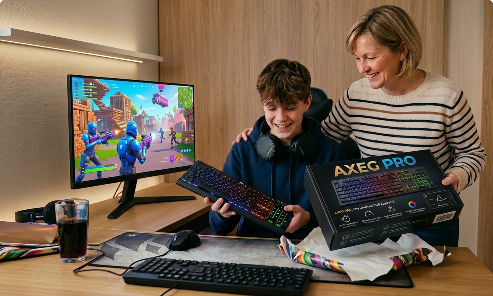
A closer look at the keyboard and mouse problem nobody talks about.
The Frustration Most Parents Notice - But Don’t Fully Understand
It usually starts the same way.
A child becomes excited about gaming.
Maybe they saved clips from YouTube, talk about playing with friends online, or suddenly spend more time at the computer after school.
A basic setup gets assembled - often using whatever keyboard and mouse already came with the computer, or a cheap “gaming-looking” bundle picked quickly online.
At first, everything seems fine.
But within weeks, something changes.
The excitement fades.
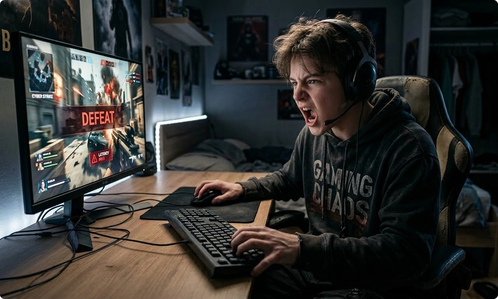
Complaints start appearing:
- ⛔ “The controls feel weird.”
- ⛔ “My mouse doesn’t move right.”
- ⛔ “I pressed it but nothing happened.”
- ⛔ “My hands hurt after playing.”
To most adults, this sounds minor.
After all, a keyboard is a keyboard… and a mouse is just something you click.
But after speaking with PC technicians, casual gamers, and even parents who had gone through multiple replacements, a pattern began to emerge:
The problem usually isn’t gaming itself - it’s the equipment experience.
And surprisingly, most entry-level setups fail in ways people don’t immediately notice.
The Hidden Problem With Most “Beginner Gaming” Gear..

Walk into any electronics store or browse online marketplaces and you’ll see hundreds of keyboards and mice labeled as “gaming”.
Bright lights. Aggressive designs. Low prices.
But underneath the appearance, many share the same issues:
1. Inconsistent Input Feedback
Standard membrane keyboards often require uneven pressure. Keys feel soft one moment and stiff the next. Younger players compensate by pressing harder - which quickly leads to fatigue.
2. Heavy or Unbalanced Mice
Many budget mouses prioritize appearance over usability. Extra weight makes small hand adjustments harder, especially for kids still developing coordination.
3. Delay You Can’t See - But You Can Feel
Even tiny inconsistencies in input response create frustration. Players feel like they reacted correctly, yet the game responds slightly late.
They rarely describe it as “input lag”. They just say:
“It feels unfair”.
And when something feels unfair, motivation disappears fast.
Why Some Setups Keep Kids Engaged Longer

Curious about why some young players stay engaged - improving skills and enjoying games longer - we began comparing setups used in households where gaming remained a positive hobby versus those constantly replacing accessories.
The difference wasn’t brand prestige or expensive equipment.
It was consistency.
Specifically:
Predictable key feedback
Lightweight mouse control
Stable wired performance
Comfortable long-session ergonomics
During testing conversations, one combination kept appearing repeatedly among budget-conscious upgrades: the AXEG Pro keyboard and AXEG Pro mouse bundle.
At first glance, it didn’t look revolutionary.
But the reasoning behind why parents were choosing it became surprisingly logical.
A Bundle Designed Around Control, Not Flash
Most bundles exist simply to sell two products together.
This one appeared to solve a different problem: matching input behavior.
Both devices were designed around responsiveness and physical feedback rather than purely aesthetic features.
The AXEG Pro mouse uses an ultra-lightweight honeycomb structure weighing around 65 grams - noticeably lighter than typical entry mice - allowing quicker adjustments without strain.
Meanwhile, the keyboard uses mechanical blue switches - producing tactile and audible confirmation when a key activates.
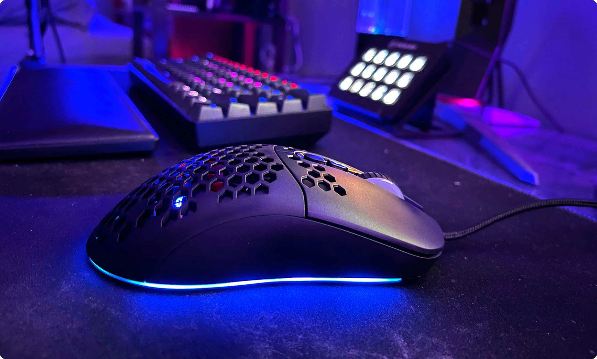
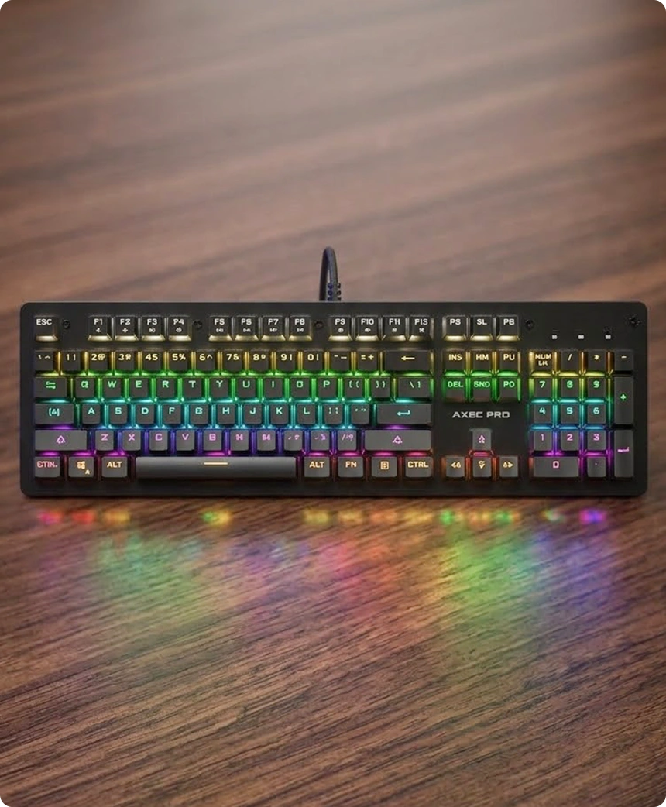
Individually, these features are common in higher-tier gear.
Together, they create something more important:
Consistency between hand movement and action.
Why Keyboard + Mouse Synergy Actually Matters?
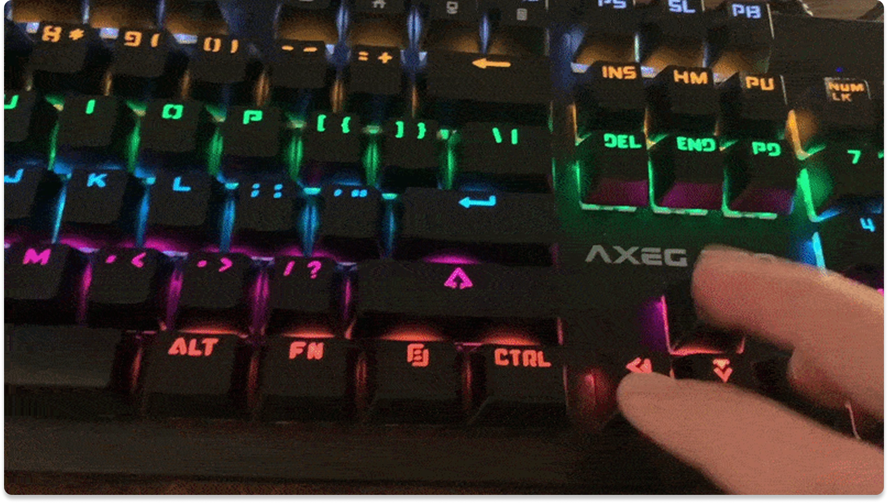
Gaming performance isn’t just about speed.
It’s about timing confidence.
When a mouse moves effortlessly but keyboard inputs feel vague, players hesitate. When keys respond clearly but mouse control feels heavy, accuracy drops.
The brain constantly adjusts to mismatched feedback.
This bundle works because both devices reinforce the same sensory loop:
Movement feels light and predictable.
Key activation feels clear and confirmed.
Actions begin matching intention faster.
Over time, players stop second-guessing inputs.
Parents often describe the result simply as:
“They stopped blaming the equipment”.
Deep Product Breakdown
The Keyboard: Why Mechanical Feedback Changes Behavior
Many parents initially worry mechanical keyboards are just louder versions of normal ones.
But the difference is functional, not cosmetic.
Mechanical blue switches provide a physical activation point - meaning users feel exactly when a key registers without needing to press fully down.
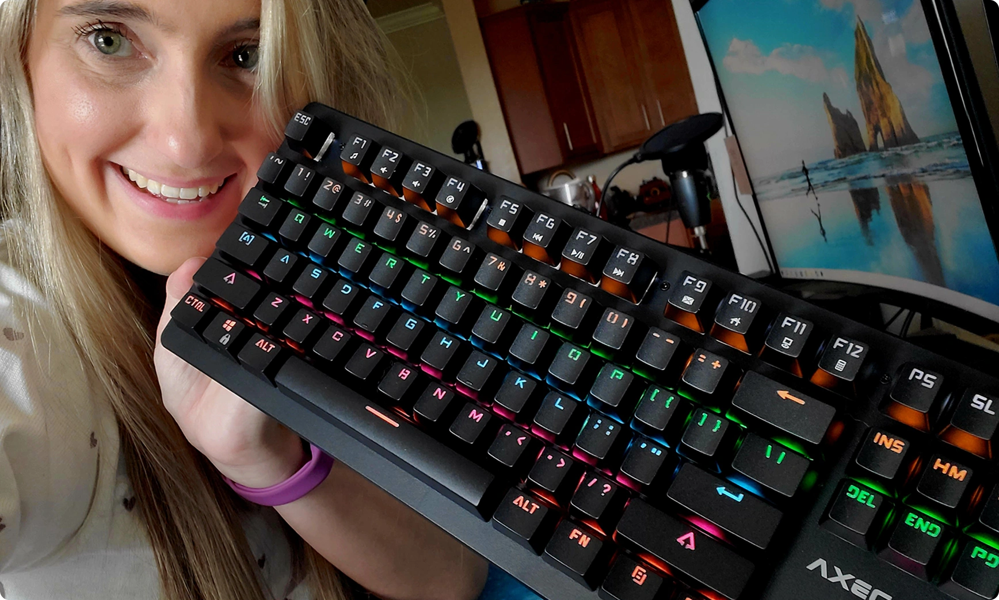
Why this matters:
- ✅ Reduces unnecessary force while typing or gaming
- ✅ Improves rhythm during repeated actions
- ✅ Prevents constant “bottoming out” fatigue
During longer sessions - homework, chatting, or gaming - this creates noticeably less strain.
The full-size layout also includes a numpad and shortcuts, making the keyboard useful beyond gaming for schoolwork or everyday computer use.
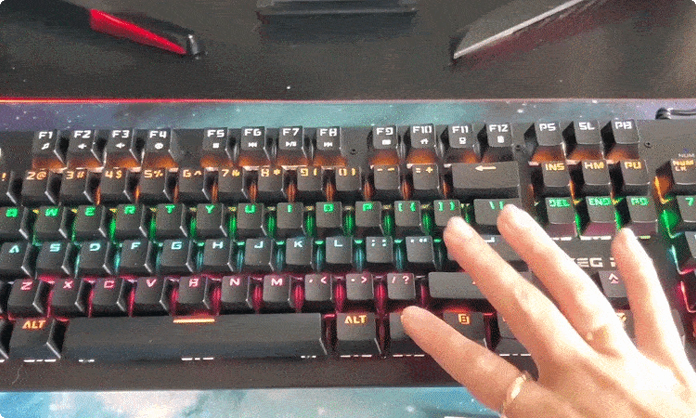
Adjustable angle support helps maintain wrist comfort, something many cheaper boards ignore entirely. In simple terms:
It feels intentional instead of mushy.
The Mouse: Why Lightweight Control Makes a Bigger Difference Than DPI Numbers
Most marketing focuses on DPI levels.
But experienced users know weight matters more for comfort and accuracy.
At approximately 65 grams, the AXEG Pro mouse reduces resistance during quick movements.
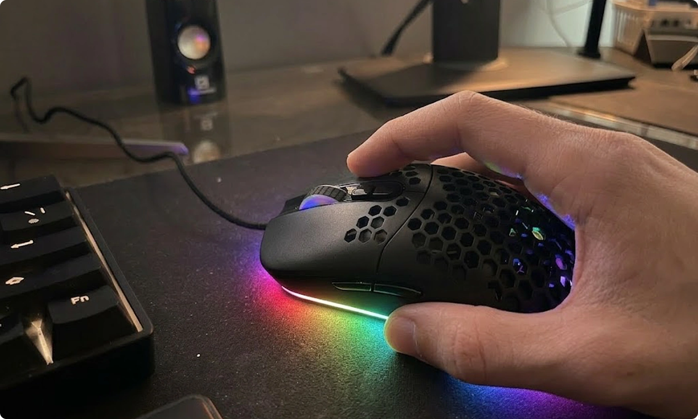
For younger users especially, this means:
- ✅ Less wrist strain
- ✅ Easier directional corrections
- ✅ More natural hand movement
The flexible paracord cable reduces drag across the desk - a small detail that surprisingly changes how smooth motion feels over time.
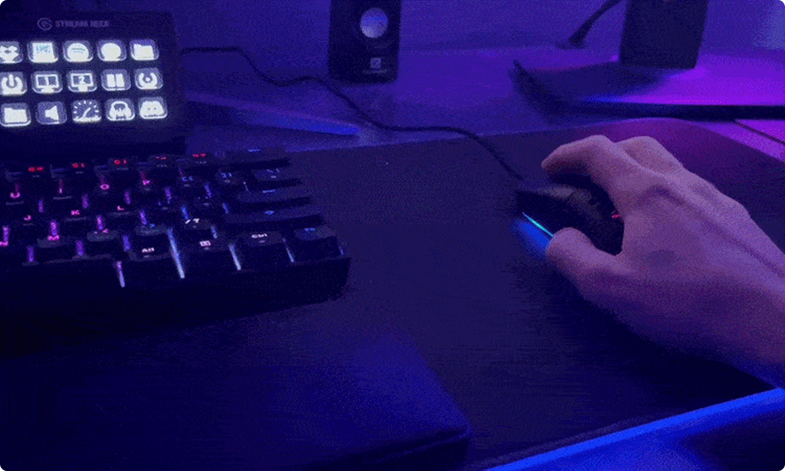
On-mouse DPI adjustment allows sensitivity changes without software, simplifying setup for families using shared computers.
And importantly for parents:
Wired connectivity ensures stable performance without battery management or wireless dropouts.
Why Bundles Usually Don’t Work - And Why This One Does
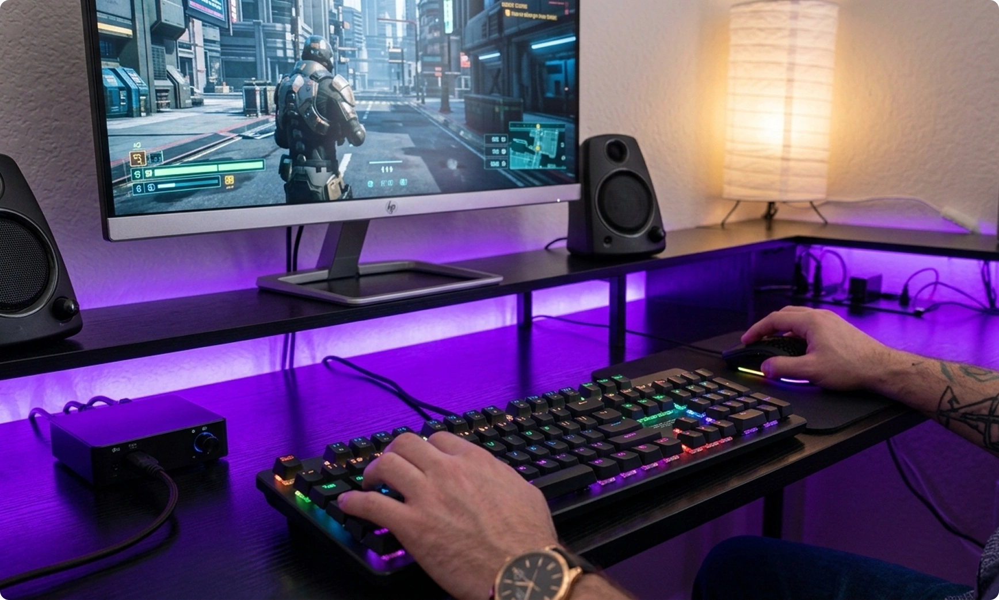
Most bundles pair unrelated products purely for pricing convenience.
Common problems include:
Mouse too advanced for entry keyboard
Keyboard designed for aesthetics over usability
Mismatched durability expectations
Here, both devices share similar priorities:
Reliability over complexity
Physical feedback over gimmicks
Practical gaming improvement without steep learning curves
That alignment makes the bundle feel cohesive rather than promotional.
Real Usage Scenarios Parents Actually Notice
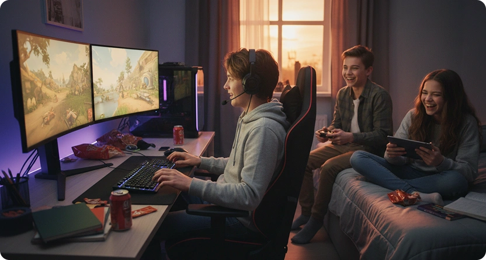
After-School Gaming Sessions
Inputs feel predictable, reducing frustration during competitive games.
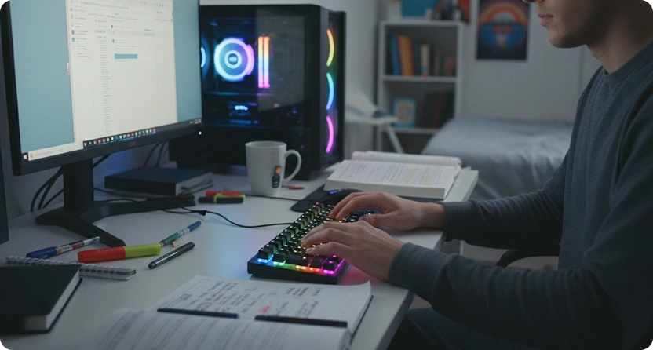
Homework and Typing
Mechanical feedback improves typing awareness - many users naturally type more accurately without looking down.
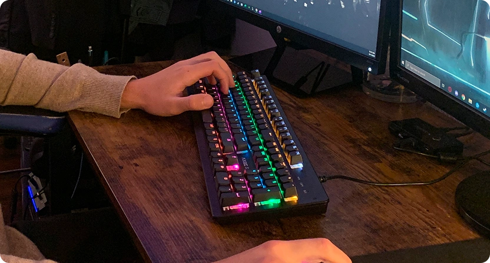
Long Weekend Sessions
Lightweight mouse reduces fatigue that often leads kids to abandon setups early.
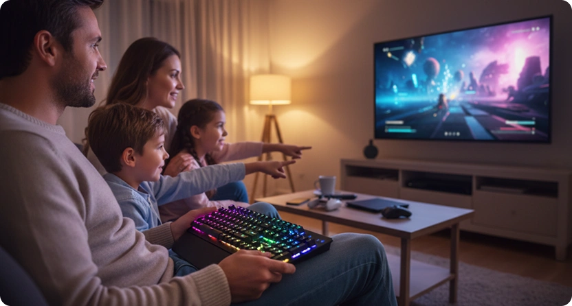
Shared Family Computers
Compatibility with both Windows and Mac devices keeps setup simple across households.
Observations From Real User Types
Across discussions with families and casual gamers, several consistent patterns appeared:
- ✅ Younger players adapted faster to mechanical feedback than adults expected.
- ✅ Parents noticed fewer complaints about “lag” or broken controls.
- ✅ Kids spent more time learning games rather than fighting equipment.
Interestingly, many parents reported the upgrade felt less like buying gaming gear - and more like fixing usability problems they didn’t realize existed.
Compared to Typical Budget Gaming Gear
Typical Entry Gear
Heavy mouse designs
Soft membrane keys
Wireless instability
Style-focused features
Short lifespan feel
AXEG Pro Bundle Approach
Ultra-light 65g control
Tactile mechanical feedback
Stable wired connection
Performance-focused usability
Durable construction (up to millions of presses)
The difference isn’t dramatic on day one. It becomes obvious after weeks of consistent use.
Why Parents Are Choosing the Bundle Instead of Buying Separately
From a practical standpoint, parents often want:
- ✅ One decision instead of researching multiple devices
- ✅ Balanced performance without overspending
- ✅ Equipment that lasts longer than entry-level accessories
Because both devices are designed to complement each other, the bundle removes guesswork.
It feels like a complete upgrade rather than two random purchases.
A Practical Upgrade - Not an Impulse Purchase
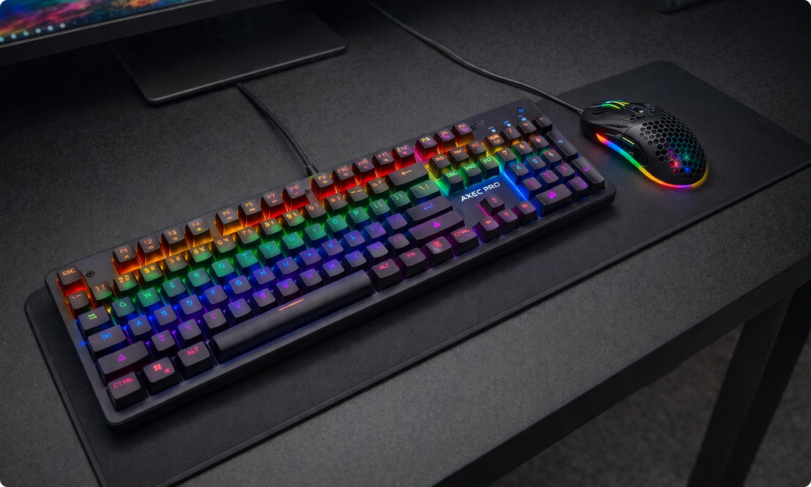
What makes this discovery interesting isn’t flashy technology.
It’s practicality.
Parents aren’t upgrading because of marketing claims - they’re upgrading because small improvements in comfort and responsiveness noticeably change the experience.
And when equipment stops getting in the way, gaming becomes what it was meant to be:
A hobby that feels rewarding instead of frustrating.
Editorial Recommendation
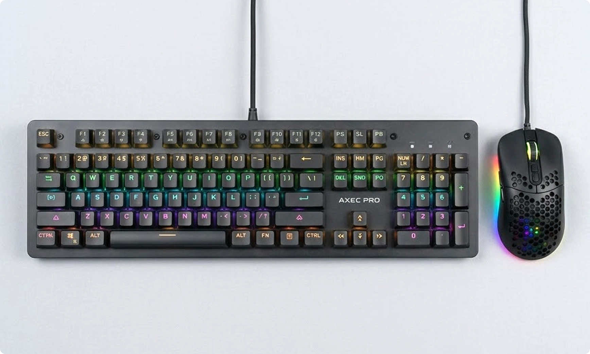
If you’ve noticed your child losing patience with their current setup - or constantly adjusting settings trying to “fix” performance - upgrading both input devices at once often solves the root issue faster than replacing them one by one.
The AXEG Pro keyboard and mouse bundle stands out not because it promises professional performance, but because it delivers something more valuable for most families:
Consistency, comfort, and reliability in one simple upgrade.
You can check current bundle availability and pricing through the official product page below while stock remains available.
View the AXEG Pro Keyboard + Mouse Bundle Here